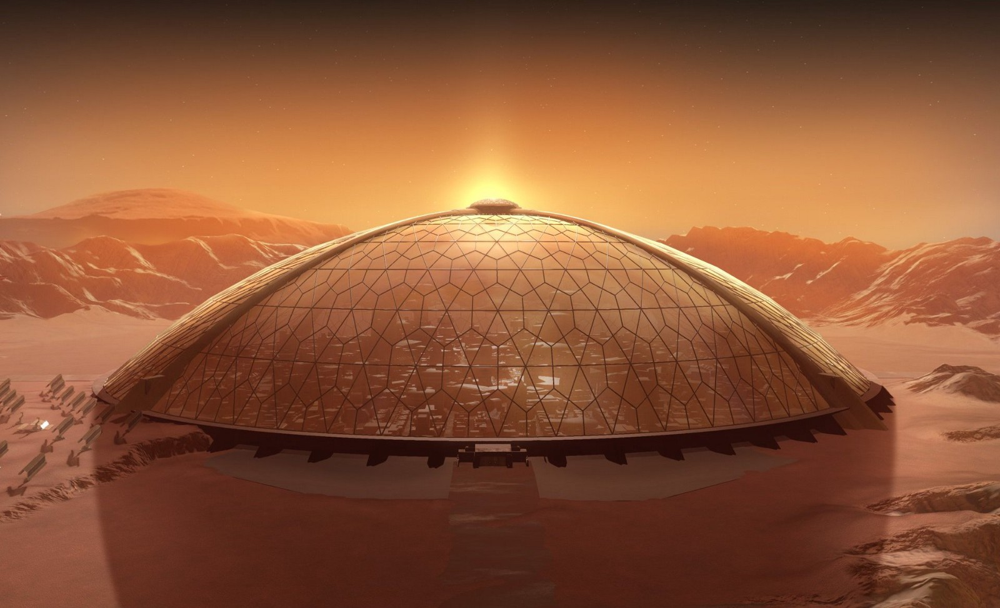

Evasion cosmique

Grâce à sa proximité avec la Terre, la Lune est depuis longtemps la candidate pour une colonie humaine dans l'espace.
Aujourd'hui, elle est la première colonie spatiale de la voie lactée.
Montez à bord du Big Falcon Rocket de Space X pour un vol d'une durée de 4 jours.
Son confort et sa sûreté vous fera passer un voyage en toute tranquilité.
La lune possède deux colonies très développées de 8000 habitants chacune.
Optez pour la colonie de la tranquilité ou bien pour la colonie de la sérénité.
ELLe est la quatrième planète du système solaire, sa position lui permet d'être dans la zone habitable et de lui conférer des conditions de vie plaisantes aux colons.
Ses nombreuses ressources font de Mars la planète la plus colonisable à ce jour.
Embrarquez encore une fois à bord du Big Rocket Falcon pour un voyage direction Mars pour une durée de 40 jours.
Vous bénéficierez d'espaces communs et des cabines privées.
Mars détient la plus grande colonie de la voie lactée avec 5000 habitants dans la région de Lucaya.
Une deuxième colonie de 2000 habitants est en développement dans la région de Tharsis.
Plus grand satellite naturel de Saturne, Titan est le seul satellite à avoir une atmosphère dense.
De plus, elle est composée de roche et d'eau gelée qui sont les principales ressources de la colonie.
Pour ce voyage d'une durée de 2 ans, vous serez à bord du Big Falcon Rocket plus.
Ce véhicule, plus grand et plus spacieux que son petit frère vous conférera tout le confort possible.
Titan ne possède pour l'instant qu'une colonie de 2500 habitants dans la région des lacs de méthane.
Une seconde colonie est en cours de développement au niveau de l'équateur de Titan, pourquoi ne pas y participer?